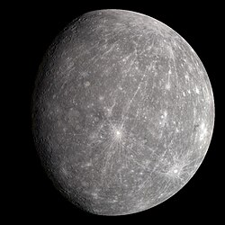

⭐Головна | 🌍Внутрішні планети | 🪐Зовнішні планети | ℹ️Про проект

Меркурій — перша за відстанню від Сонця і найменша планета Сонячної системи. Її назва походить від давньоримського бога торгівлі та мандрівників.
Відстань від Сонця: 57,9 млн км
Діаметр: 4 880 км
Маса: 3,30 × 10^23 кг
Тривалість доби: 58,6 земних діб
Тривалість року: 88 земних діб
Супутники: немає
Через відсутність атмосфери Меркурій не може утримувати тепло. Перепад температур є найбільшим у Сонячній системі:
Вдень: +430 °C Вночі: –180 °C